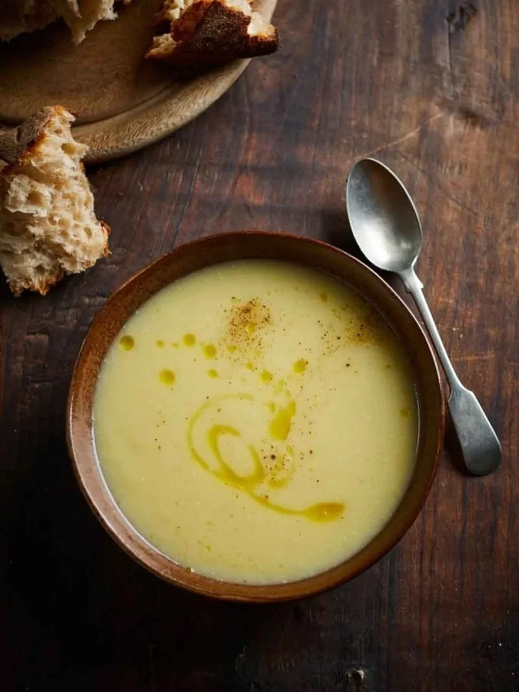

Leek and potato soup

Jamie Oliver's famous leek and potato soup, to share with the whole family
Have you ever wanted to cook like a professional chef? Well with this recipe created by Jamie Oliver, you'll be able to call yourself one!:
Ingredients
- 2 sticks of celery
- 2 medium onions
- 2 cloves of garlic
- 400g of leek
- 400g of potatoes
- Olive oil
- 2 organic chicken or vegetable stock cubes
Steps
- Trim, peel and roughly slice the celery. Peel and roughly chop the onions. Peel and finely slice the garlic.
- Cut the ends off the leeks, quarter them lengthways, wash them under running water and cut them into 1cm slices.
- Heat 2 tablespoons of oil in a large pan on a high heat, add all the chopped and sliced ingredients and cook with the lid ajar for 10 minutes, or until softened, stirring regularly.
- Meanwhile, peel the potatoes and cut them into 1cm cubes.
- Put the stock cubes into a jug or pan, pour in 1.8 litres of boiling water and stir to dissolve, then pour into the veg pan.
- Add the potatoes. Bring to the boil, then reduce the heat to low and simmer for 10 minutes with the lid on, then remove from the heat.
- Season to taste with sea salt and black pepper, then either serve like this or pulse until smooth using a stick blender or liquidizer.